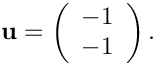

In this document we demonstrate how to use oomph-lib's conversion routine fig2poly (a C++-based stand-alone executable, generated from the source code fig2poly.cc to create *.poly files for Jonathan Shewchuk's open-source mesh generator Triangle , based on the output from the open-source drawing program xfig.
Mesh generation with xfig, fig2poly and Triangle
Mesh generation with xfig, fig2poly and Triangle is extremely straightforward.
- Draw the (piecewise linear) domain boundaries, using xfig's polyline drawing tool. Each polyline represents a distinct mesh boundary. The start and end points of the polyline should not coincide –
fig2polywill automatically "fill in" the missing line segment.
- If the domain has any holes, place a single circle (drawn with xfig's circle/ellipse drawing tool) into each hole. Use the circle/ellipse drawing tool that requires the specification of the radius. The radius of the circle is irrelevant.
- Save the figure as a
*.figfile.
- Use
fig2polyto convert the*.figfile into a*.fig.polyfile. For instance,will generate a file./fig2poly some_figure.figsome_figure.fig.poly.
- Process the
*.fig.polyfile produced byfig2polywith Triangle and use the resulting*.poly,*.ele and*.node files as input tooomph-lib'sTriangleMesh, as described in another example.
- Done!
Comments:
fig2polyexpects the xfig output file to conform to "Fig format 3.2" and checks for the presence of the string "#FIG 3.2" in the first line of the*.figfile. below.
- The figure must contain only polylines and circles. The presence of any other objects will spawn an error message and cause
fig2polyto terminate.
- The figure must not contain any "compound objects". Compound objects may, of course, be used while drawing but you should break them up before saving the figure.
Example 1: Solution of Poisson's equation on a rectangular domain with a hole
Here is a screen shot from an xfig session. The figure defines a quadrilateral domain with a quadrilateral hole.

Here is a plot of the resulting mesh. It was generated by converting the file hole.fig generated by xfig, to hole.fig.poly, using fig2poly and processing the resulting file with

Finally, the figure below shows a plot of the computed solution of a Poisson equation with a unit source function, obtained with three-noded (red) and six-noded (green) triangular Poisson elements:
This solution was computed with the driver code mesh_from_xfig_poisson.cc.
Example 2: Finite-Reynolds-number flow past the oomph-lib logo
Here is a screen shot from another xfig session. The figure defines a quadrilateral domain containing the oomph-lib logo whose letters create holes in the domain.

Here is a plot of the mesh generated with the same procedure discussed above.

Finally, the figure below shows a plot of the solution of the steady Navier-Stokes equations (velocity vectors and pressure contours) in this domain. No-slip conditions were applied on all boundaries. Zero velocities were imposed on all boundaries apart from the outer bounding box (boundary 1) where we set

The plot may therefore be interpreted as showing the flow field that is generated when the rigid quadrilateral box that surrounds the oomph-lib logo moves in the north-westerly direction while the logo itself remains stationary. This was computed with the driver code mesh_from_xfig_navier_stokes.cc which is very similar to that for the driven cavity problem, so we shall not discuss in in detail.

Comments and Exercises
Numbering of the mesh boundaries
- Each polyline in the xfig-generated figure represents a distinct mesh boundary.
fig2polyassigns boundary numbers to these, depending on the order in which the polylines are listed in the*.figfile. Since this is not always obvious, it is usually necessary to examine the mesh boundaries by callingMesh::output_boundaries(...)before assigning boundary conditions.
- Since boundaries are defined by closed polygons, all nodes that are located on a specific polygon have the same boundary number. In cases where a finer sub-division of the boundary is required (e.g. to identify inflow boundaries) some post-processing of the mesh may be required.
Exercises
- Download and install xfig (if you work in a linux environment, xfig is likely to be available already as it is part of many linux distributions) and create your own meshes.
- Think of a way to modify the xfig-based mesh generation procedure so that a closed boundary can contain several sub-boundaries so that in- and outflow boundaries can be identified separately. [This is an "advanced" exercise and one to which no solution exists as yet – please let us have your code if you find an easy way to do this!].
PDF file
A pdf version of this document is available.